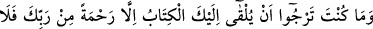
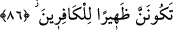

“Konuşması ilminizi artıran, görünüşü size Allah’ı hatırlatan, ameli âhirete rağbet
ettiren kimselerle oturup kalkın.”
Şeyh Sâ’dî der ki:
Ey Sâdî! Vatan sevgisine dair sahih hadis varsa da
Ben burada doğdum diye sıkıntı içinde ölmek doğru değildir
Hâfız Şirâzî der ki:
İnsanları dostun diyarı bağlar, yoksa Fars ülkesi değil.
Bu mihnet, bütün dünyaya değmez
Hâtiften şöyle bir ses işitti:
“Elif” harfi gibi, hiç kimse ile ülfet etme ki
Ayrılık vakti üzülüp kederlenmeyesin
Akıllı olan, dostlardan ve vatandan ayrılığı seçer de, Melik ve Deyyân olan Allah’dan
ayrılığa cüret edemez.
Her şeyin -ondan ayrıldığın zaman- bir bedeli, telafisi vardır.
Ancak Allah’tan ayrılmanın herhangi bir karşılığı yoktur.
Dolayısıyla, Allah’ın dışındaki şeylerden zorla ayrılmadan önce,
Kendi ihtiyarınla onlarla ülfet etmekten ayrıl.
Celîsü’l-halve ve enîsü’l-vahde adlı eserde kaydedildiğine göre, Zünnûn-ı Mısrî
(k.s.) şöyle anlatır: Bir vakit yolculuğum esnasında bir şehrin kapısına vardım. Şehrin
içine girmek istedim. O şehrin kapısında bir köşk ve akan bir ırmak gördüm. Irmağın
yanına vardım ve abdest aldım. Köşkün damına baktığımda, ayakta durmuş son derece
güzel ve alımlı bir câriye gördüm. O beni görünce şöyle seslendi: Ey Zünnûn, seni
uzaktan görünce mecnun zannettim. Abdest alınca, âlim sandım. Abdestini alıp da
yanıma geldiğinde, seni bir ârif zannettim. Ama şimdi kesin olarak anladım ki sen ne
mecnunsun, ne âlimsin ne de ârif. Nedenini sordum, şu cevabı verdi: Eğer divane
olsaydın, abdest almazdın. Âlim olmuş olsaydın, yabancının ve nâmahremin evine
bakmazdın. Şâyet ârif olsaydın, gönlün Allah’tan gayrisine (masiva) meyletmezdi.
86. Sen, bu Kitab’ın sana vahyolunacağını ummuyordun. (Bu) ancak Rabbinden